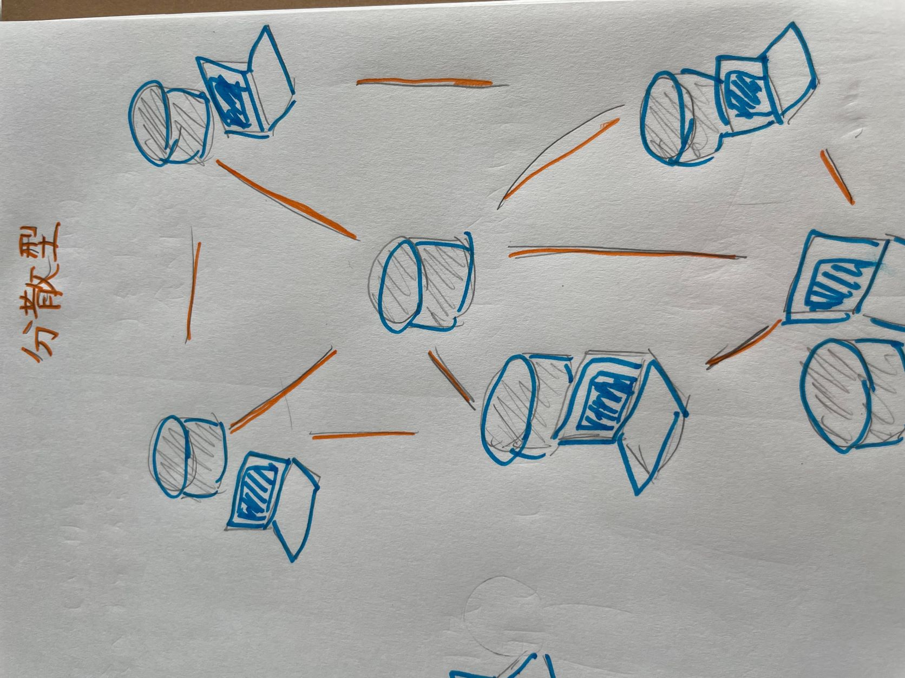

第１回のまとめ
1.Gitについて
Gitは分散型バージョン管理システムの一種
バージョン管理システムとは
ファイルに対して「誰が」「いつ」「何を変更したか」というような情報を記録することで、過去のある地点の状態へ復元をおこなったり、変更内容の差分を表示できるようにするシステムのこと。
バージョン管理システムには「集中管理方式」と「分散管理方式」の２つがある。
集中型管理方式の特徴
- ファイルの保管場所（リポジトリ）を一箇所のみ提供
- 利用者はファイルを編集した後、そこに直接反映させて管理
- 保管場所が1種類しかないと、複数人数で1つのファイルを同時に修正したとき、メンバーの変更内容が他のメンバーに上書きされてしまう可能性あり
分散型管理方式の特徴（Gitが使用）
- 利用者1人1人に専用の保管場所を提供
- 利用者は基本的に個人の保管場所で作業し、ファイルの修正が一段落したら、チーム全員で共有する保管場所に反映
- 複数人で同じファイルを修正しても変更内容が上書きされてしまう心配がない

このように、Gitの大きな特徴は「分散型」のバージョン管理システムであることだ。
2.HTMLについて
HTMLはWEBページを作成するための言語
HTMLとは「ハイパーテキスト・マークアップ・ランゲージ（Hyper Text Markup Language）」のこと。
分かりやすく言えば、Web上で公開しているページのテキスト（文書）やレイアウトなどの構造を定義している書式。
HTMLのタグとは
「タグ」とは文字（テキスト）に意味を与えてあげる印のようなもの。
文字をタグで囲うと、ただの文字がh1（見出し）やp（段落）といった意味を持つようになる。
また、文字列などをタグで囲んだ情報の単位の事を「要素」と言う。
最後のタグ（終了タグという）には「/」が入ることに注意。閉じ忘れなどがあると、表示が崩れる原因になる。
<〇〇> ←これがタグ（〇は文字列などの要素）
CSSとは
HTMLが文章構造自体を指定する言語なのに対し、CSSは文章にどのような装飾（デザイン）を行うかを指定できる言語。
文章の内容を表すのがHTML、その文章の色やサイズなどを指示するのがCSS。
HTMLタグやHTMLファイル（HTMLタグで囲んだ文章を集めたファイル）に直接記述したり、CSSファイル（外部に作ったファイル）に記述したりして作成する。